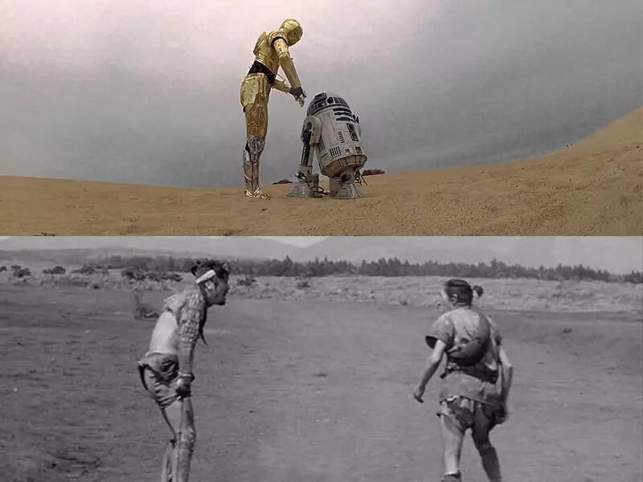
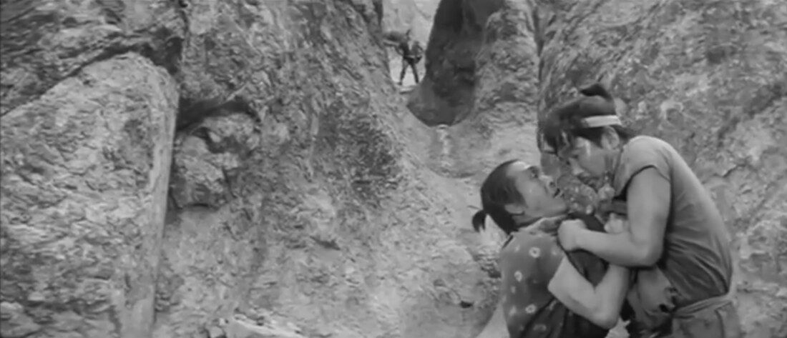
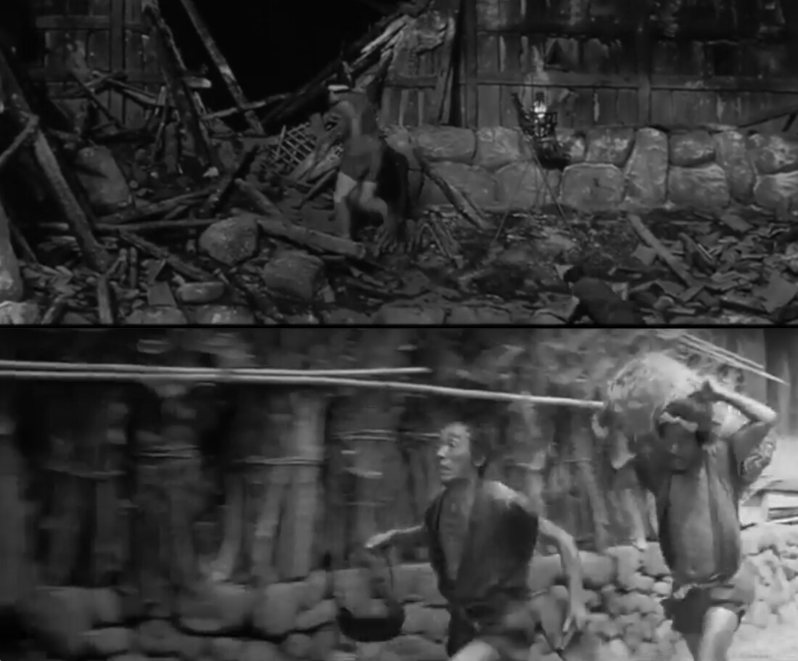
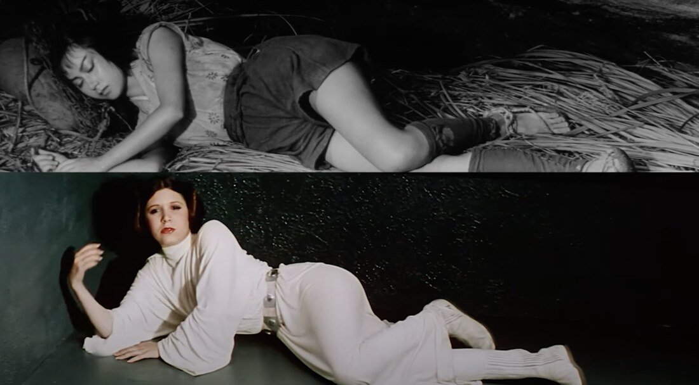
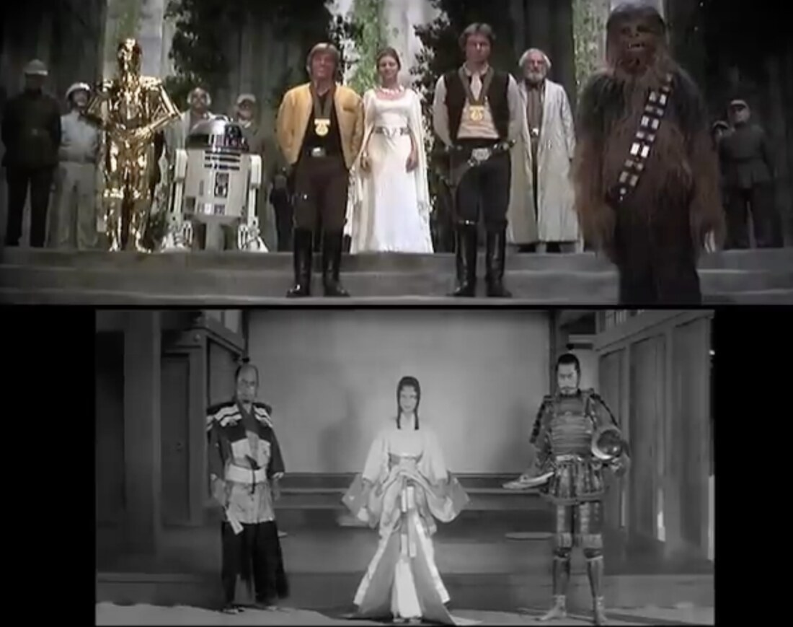
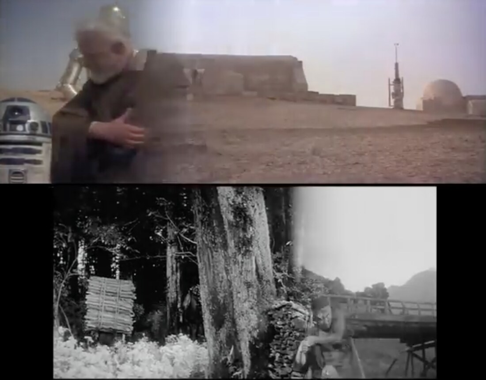
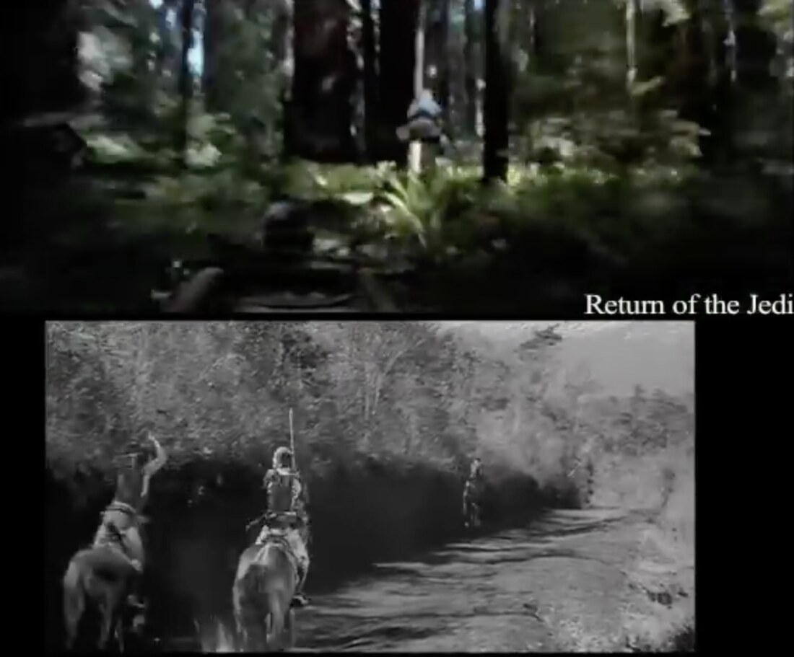

The Hidden Fortress (1958) is Kurosawa’s first film in widescreen and one of his most purely entertaining: a fast, funny samurai adventure. A defeated clan’s princess and her general, in disguise, must smuggle the clan’s gold across enemy territory to safety, helped and hindered by two greedy peasants. Donald Richie called it “romantic,” “mythic,” “operatic,” and “fairy-tale” — then Kurosawa’s most expensive film, and his most financially successful.
“I had never seen anything that powerful or cinematographic. The emotions were so strong that it did not matter that I did not understand the culture or the traditions. From that moment on, Kurosawa’s films have served as one of my strongest sources of creative inspiration.” (Lucas, 2004)
“The one thing that really struck me about The Hidden Fortress was that the story was told from the perspective of the two lowest characters… That set me off on a very interesting course, that was the strongest influence for me in Star Wars, and it is what altered the point of view of all three movies.” (Bouzereau 1997)
Hidden Fortress and Star Wars are both told through a pair of the socially lowest characters: the peasants Tahei and Matashichi, and the servant droids C-3PO and R2-D2 — who even share dialogue with the peasants, as when they curse their “lot in life” (Kaminski, p. 87).
The debt is documented. Lucas’s first Star Wars treatment (April 1973) “included every single scene from Hidden Fortress,” substituting a fourteen-year-old Princess Leia for Princess Yuki, a General Skywalker for General Makabe, and “a pair of bickering bureaucrats (later turned into robots named R2-D2 and C-3PO) for the comedic peasant duo Tahei and Matashichi” (Kaminski, p. 87). Having no home video, Lucas worked from Donald Richie’s 1965 plot summary, copying entire passages almost verbatim.

We can talk about this cinematic image in a few different ways, based on how the two fare on the screen:
The contrasting comic duo is an old narrative device across writing, drawing, and manga. The contrast in the two bodies is transferred onto temperament or social role: tall / short → serious / funny; solemn / goofy.
Typage is a technique that relies on actors’ physical characteristics to reflect the roles they play. Physical features are quickly associated with the class, profession, or social role of a character within the audience’s social context; a strong actor-role link can even lead to typecasting. Eisenstein built cinema from montage — effective sequences and patchworks of signs — and the signs include both visual images (through editing) and the audience’s mental images, such as typage. His style is often called the dialectics of film form.


Lucas is drawn less to Kurosawa’s stories than to his images. “I’m not known for my dialogue,” Lucas said; Kurosawa’s films “work because they speak to us at a direct, perhaps more primal, level… through images” (Kaminski, p. 89). “The visual graphics, and the framing and the quality of the images, goes a long way to telling the story and setting the mood” (p. 94).
Beyond the peasant duo and the hidden treasure (gold in Hidden Fortress; the Death Star plans inside R2-D2), Lucas carried over the whole shape of the tale: a princess on the run with her retainers and clan treasure, her protector-general (Makabe → General/Ben Kenobi), and a story framed from the servants’ point of view.
Lucas prized this above all: the film is “told from the point of view of the farmers, and not… the princess. It really did frame the movie” (Kaminski, p. 87). Producer Gary Kurtz even considered buying the rights from Toho. When Kurosawa heard Lucas was using his characters, he waved off any fee, smiled, and said, “use them all you like” (Nogami, in Kaminski, p. 89).




Directing again after two decades, Lucas leaned hard on the master. He adopted Kurosawa’s late two-camera setup, and Phantom Menace — loosely a remake of Hidden Fortress, following its plot even more closely than the original Star Wars — favors the master shot, a feeling of stillness, and composition over crane or steadicam movement, “circa Ran” (Kaminski, pp. 95–96).
Have you seen Star Wars? Talk about anything from Star Wars that you think might show the influence of Hidden Fortress — or of Kurosawa more broadly.